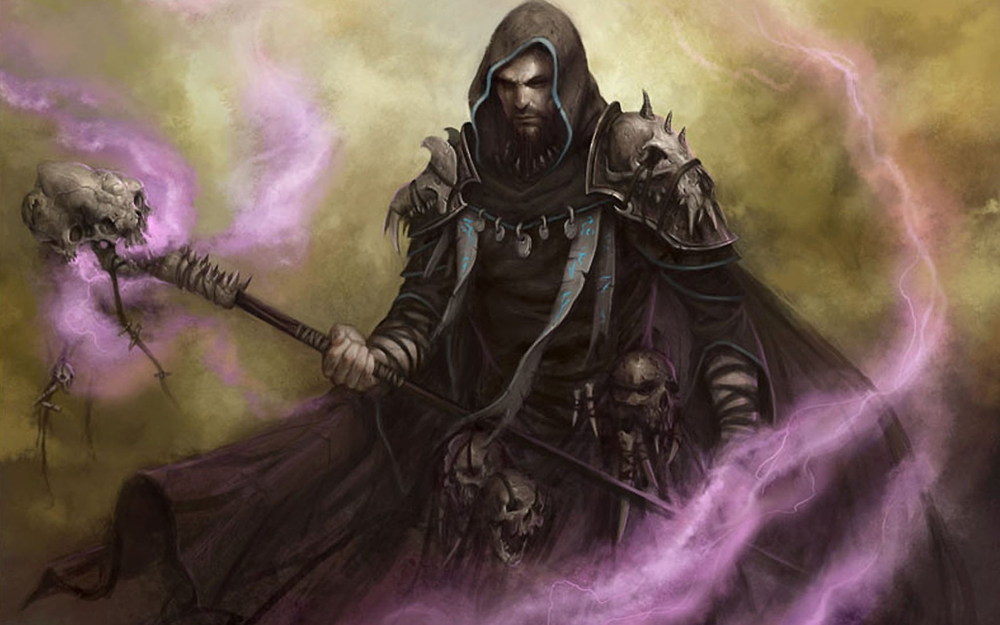
Данный гайд/билд написан любителем тёмных магом для совсем новичков, которые хотят комфортной игры в своих уровневных локациях (преимущественно ПВЕ). Опытный игрок не найдёт в статьей что-то новое, но он может написать свой гайд с использованием любых материалов этой статьи в том случае, если ценность Дейли возрастёт.
Сложность: стартовая
Автор: Смерть
Время реализации: ~30 минут
Уровни: с 1 по 14
Тип: маг тьмы
Для удобства изучения, материал разбит на шаги под спойлерами. Самостоятельно раскрывайте те блоки информации, которые нужны в данный момент. Слова, которые выделены жирным содержат дополнительные подсказки, которые появляются при наведении курсора. Итак, начнем:
В сущности, выбор логина (игрового имени) ни на что не влияет, но т.к. мы в MMORPG, то рекомендую взять что-то тематическое, для аутентичности. Для статьи, например, я нашёл интересный сборник имён тёмных магов.
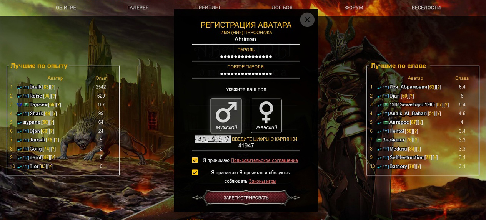
Заполняем все поля, обязательно читаем правила игрового сообщества, и нажимаем “ЗАРЕГИСТРИРОВАТЬ”. После чего откроется первая часть игрового Лора. Читаем и жмём “Продолжить”.
На следующей странице нам предлагают выбрать расу игрока. Для темного мага оптимально подойдёт Дану, Демон и Человек — рекомендую выбирать расу с заделом на Реинкарнацию. Для нашего билда я выбрал Дану за его особенность “Тёмное начало”.
Нажимаем “Создать” и читаем вторую часть игрового Лора.
Здесь, на самом деле, всё довольно подробно объяснено разработчиками игры и мне добавить нечего — проходите обучалку и после финального этапа обучения обыскиваете клетку (центральный квадрат). После чего вы попадёте в локацию Центральная площадь, где нас сразу же встречает достопочтенная Элика.
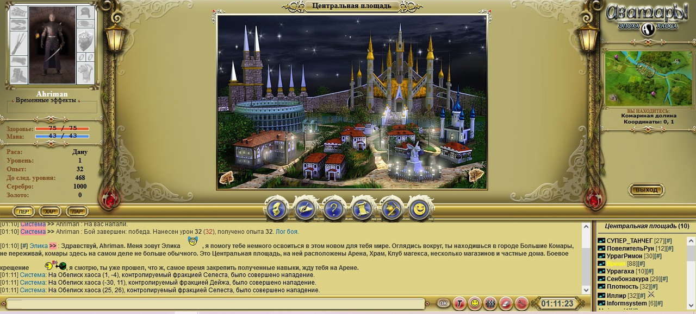
Элика даст нам три стартовых квеста и расскажет о городских локациях – нужно лишь внимательно читать, что она пишет в чате. Мы пойдём немного отличным от её советов маршрутом:
1. С площади заходим в Храм —> “Религии”. Принимаем любую понравившуюся. Я принял Иллириана (единственная религия на момент создания гайда), о чем гордо сообщает система в чате.
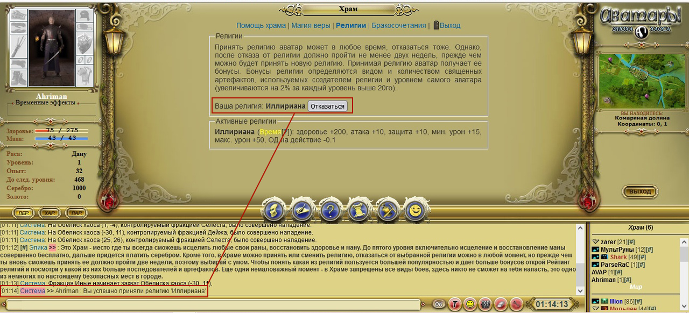
После принятия религии обратите внимание, что ваши показатели Здоровья и Маны изменились в большую сторону. Сразу после взятия религии у вас недостает какого-то количества ХП/МП до 100%, поэтому перед следуюшим шагом зайдите в раздел “Помощь храма” и бесплатно восстановите жизненные силы.
2. Набожные и бодренькие выходим обратно на площадь —> с площади заходим на арену, для выполнения первого квеста от Элики. Опять же в чате читаем, что она нам пишет и делаем всё по-другому: Элика предлагает нам 3 раза побить паука, но мы ребята крутые – пойдём сразу на Волка: Поединки с ботами —> Под изображением Волка нажимаем “В бой”, выбор позиции пропускаем, сейчас она не важна. Жмём вступить.
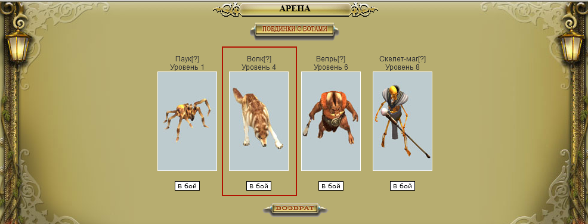
2.1. Как проходит сражение: как только загрузился бой, сразу напрягаем свою магическую ауру и через меню “Магия” накидываем на противника 3 мнимых бессилия — это даст вам запас времени, так как под действием этого заклинания Волк будет наносить 0 урона.
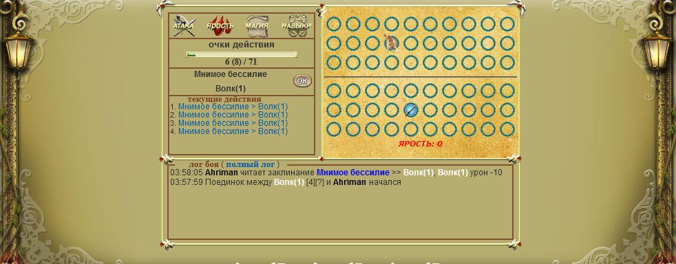
Как только накопили полную полоску ОД (зелёненькая такая), то напрягаем уже мыщцы и через меню “Атака” выбираем простой удар и вдоволь жмём кнопку “ОК”. Хватит 3-5 ударов, что волк слёг. Лог боя при этом выглядит вот так.
- После боя (в котором мы конечно же победили), видим в чате, что получили от Системы 246 опыта! (за Паука бы дали до 100 опыта).
- По квесту мы должны убить ботов три раза, поэтому нужно повторить всё ещё два раза, но перед этим — надо поплнить запасы маны и здоровья в Храме. Выходим на площадь, оттуда в Храм и обратно.
- После 3х побед выходим с Арены на Площадь и видим, что, во-первых, наш уровень уже 2, а во-вторых, Элика подарила нам Кристалл знаний.
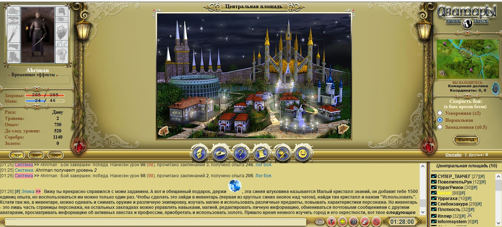
3. Но так как мы идём своим путём, то откладываем кристалл на попозже и идём на второй квест Элики. Суть квеста полностью раскрывает сама Элика, я лишь добавлю, что повторно заходить на Арену и в Храм не нужно, поэтому в текущей локации вам остаётся посетить лишь: Лавка мага и Магазин.
Далее нажать на стрелочку, направленную направо — она приведёт в Жилой район, где нужно опять нажать стрелочку направо, которая переместит аватара в локацию Кладбища. Не забывайте читать, что пишет вам экскурсовод аватаров 😉
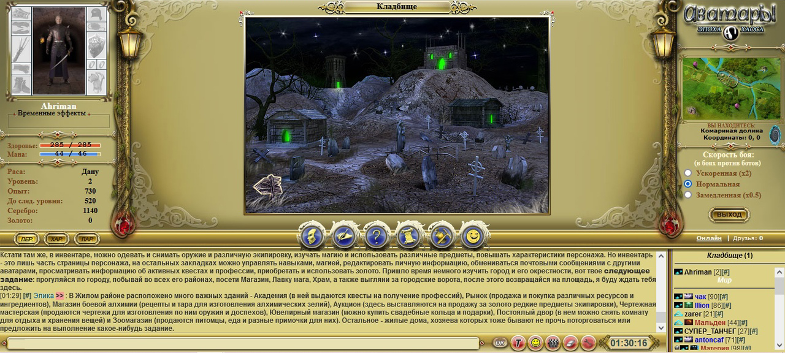
Будучи на кладбище, идём по противоположным стрелочкам обратно на Площадь, откуда переходим в район гильдий, нажав на стрелочку налево. И уже с района гильдий выходим за город, по такой же стрелочке налево. Здесь мы уже были, поэтому как попасть обратно в город, думаю, разберётесь. 🙂
4. Вернувшись с полей видим, что Элика щедра и вдобавок к первому кристаллу подарила второй, да ещё и 100 серебра сверху насыпала. На стартовом уровне это целое богатство.
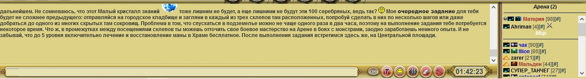
5. Третий квест займёт уже три часа на выполнение, поэтому делать его МЫ НЕ БУДЕМ. Потратим время на что-нибудь полезное!
Сейчас нам надо сделать анбоксинг подарков от Элики, поэтому нажимаем на первую кнопку основного меню (с лицом которая) и попадаем на страницу, где просят ввести наши данные – почту и дату рождения.
НАСТАИВАЮ на том, чтобы вы ввели реальные данные, это НУЖНО, если в дальнейшем вы захотите изменить логин, восстановить пароль или код для операций с золотом.
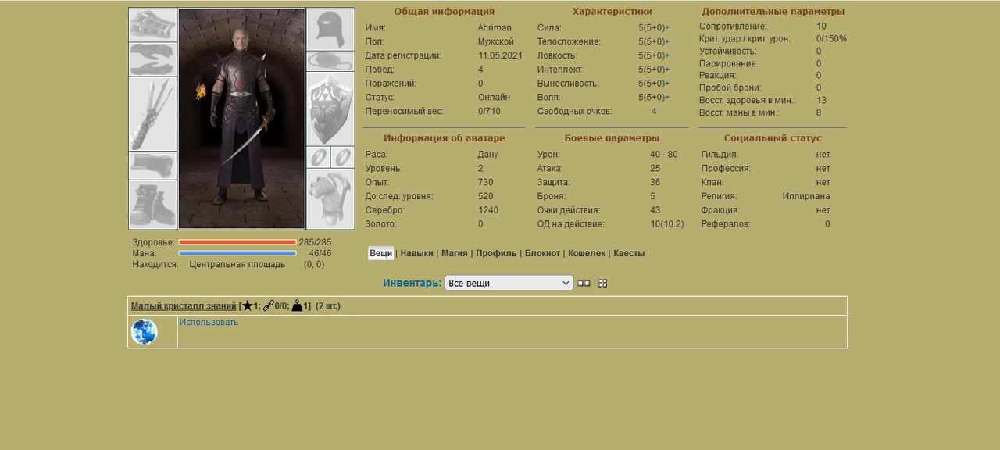
После ввода данных мы видим инвентарь во всей красе. И глаз, конечно же, бросается на те самые кристаллы, под которыми написано “Использовать”. Нажимаем один раз, потом второй и видим, что персонаж-то уже 4 уровня! Но для начала билда нам нужен минимум пятый, поэтому возвращаемся в игру, заходим на Арену и повторяем фокус с убийством ботов — только на этот раз бьём Вепря 6 уровня.
Схема та же: 3 мнимых бессилия и бьём простыми ударами. Лог боя такой. Как видим, появилось много промахов — это из-за наших низких атакующих параметров, более подробно о них можно узнать здесь и здесь, но так или иначе от нашего шквала ударов Вепрь умирает. За что мы и получаем 216 опыта.
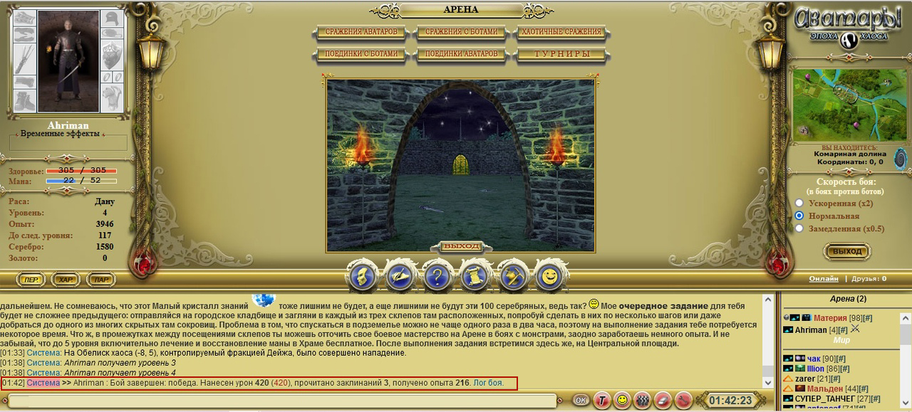
Но мы всё ещё 4 уровня, поэтому Храм – лечение и восстановление маны – арена – новый бой – новая победа. И вот мы пятого уровня.
Поздравляю, вы начинаете карьеру некроманта:) Почему именно пятый уровень? Этот уровень позволяет изучить первый закл с призывом Зомби, которые гордо аки безбашенные будут крушить всех в мясо.
Итак, с арены бодрым шагом выходим на Площадь, оттуда в Лавку мага — прилавок с магией тьмы. На самом деле, здесь очень много заклинаний, но кроме призыва, остальные лоу-лвл заклы используются крайне редко и до 14 уровня нам не пригодятся. Поэтому листаем чуть ниже и видим в ассортименте “Вызов зомби”, нажимаем “Купить”.
После выходим на Площадь и заходим в магазин — нужно выбрать одежку по фасону. Я куплю изумрудный посох за 310 серебра, украшенная броня мага за 291 серебро, два кольца заклинаний, суммарно за 98 серебра и мерцающий амулет за 111 серебра. Если вы куплю всё то же самое, то в кошельке у вас останется 886 серебра. Дальнейшие расчёты будут +- от этой суммы.
Теперь нужно одеться и выучить заклинание, поэтому заходим в Инвентарь и видим, что можно надеть только 4 вещи, а вот амулет и заклинания почему-то заблокированы. Если посмотреть внимательно – видим, что некоторые цифры красные, это гооврит нам о том, что нам не хватет либо Характеристик (для вещей и заклинаний), либо навыков (для заклинаний), чтобы прочитать/надеть. Для амулета нужно 6 ловкости, поэтому в разделе “Характеристики” (сверху по центру) я качаю 1 ловкость. Теперь доступны все вещи, поэтому надеваем все. После надевания вещей, напротив заклинания с зомби, требование интеллекта персает быть красным, так как вещи дали дополнительные единицы интеллекта. Но мы всё равно оставшиеся 9 очков кидаем в интеллект. Как видим, увеличилось в итоге почти всё — мана стала ~350!
Теперь, чтобы изучить вызов зомби заходим в “Навыки” и видим, что у нас там какие-то вампиризм и Уворотливость, что вообще-то не свойственно тёмному магу! Поэтому смело идём в раздел “Кошелёк”, и деаем сброс всех навыков — до 14 уровня это бесплатно (именно поэтому, кстати, на гайд только до 14 уровня — далее будем делать перса несколько по-другому).
После сброса вовзращаемся к нашим навыкам и в выпадающем списке находим Магию тьмы. Жмём “Взять новый навык”. У каждого заклинания есть свои требования по уровню навыка, необходимого для его изучения. В случае с зомби это 3 уровень навыка, поэтому поднимаем магию тьмы до 3. Далее, всё в том же выпадающем списке, находим навык “Тайные знания” и прокачиваем его на все свободные единицы навыка. Получаем 6/3 (ТЗ и Магия тьмы).
ИЗучем вызов зомби, закрываем инвентарь, восстанавливаемся в храме и со своими 520 маны идём на арену качаться.
P.S.: В правом фрейме, где написано ваше местонахождение выберите скорость боя “Ускоренная х2”.
На этот раз наша цель – Скелет-маг 8 уровня. Качаться на Вепре и тем более волке нам не выгодно, так как хороший опыт дают только за противников с бОльшим, нежели ваш, уровнем. Поэтому нажимаем в бой, выбираем любую клетку на поле боя — желательно не первую линию, так как на неё буду призываться зомби. Я выбираю третью.
Будучи в бою, нещадно вызываем Зомби на всю нашу ману (6 шт, если вы точь-в-точь повторили мой закуп). При этом мы видим, что Скелет-маг смог снести нам почти всё ХП, но это не страшно, потому что наши бравые Зомбики снесут его на раз-два. Лог боя при этом такой: https://chaosage.ru/log.php?id=24794297 Как видим, мы получили почти 1000 опыта!
Наши дальнейшие действия это Храм – восстановление ХП и МП – новый бой с Скелетом-магом и так до тех пор, пока не достигните 8 уровня. Кстати, в бою можно использовать не только призыв зомби, но и другие заклинания. Например, лечение лёгких ран: https://chaosage.ru/log.php?id=24794322 — это даст вам дополнительный опыт. К сожалению, маны у нас не так много, поэтому хватит всего на 3-4 дополнитедьных заклинания.
Всего у меня получилось 11 боев, в которых я призывал зомби, чтобы дойти до 8 уровня.
Поздравляю, в очередной раз 🙂 Теперь вы квалифицирвоанный Маг тьмы 8 уровня и можно отправляться за приключениями. Но перед каждой авантюрой нужно немного подготовки. Во-первых, у нас появились сводобный очки навыков и характеристик. Я продолжаю качать Интеллект и ТЗ. На выходе получаем 644 маны. Во-вторых, у нас как минимум 1.500 серебра, поэтому идём в магазин Темная корона (428 серебра), Позолоченные сапоги (473 серебра), и Ритуальный пояс (387). Но ничего из этого надень пока что не получается, не хватает зарактеристик, поэтому, нам нужен подставной шмот — это такие вещи, которые не нужны лично нам для игры, но их бонусы помогают надеть нам основной пул вещей. В нашем случае это 1 рубиновое кольцо (186) и Наручи здоровья (60). Покупаем их, заходим в инвентарь и надеваем кольцо – видим, что сапоги теперь можно надеть. Однако, все остально по-прежнему горит красным и поэтому нам нужно второе рубиновое кольцо за 186 серебра, которого, увы, осталось всего 45! Не унываем, а надеваем Сапоги и идем в жилой район, где заходим в Академию. Уже на пороге нас втречают с предложением заработать чеканых монет, оказав услугу по дешифроке местной Энигмы, чем мы собственно и займёмся 🙂
Самм процесс расшифроки прост как три копейки: Смотри руну, ищете обозначение руны на нижней картинки и впечатываете в спец.поле. Всего в свитке три слова (1 руническая строка = 1 слово). Как только вписали три слова, жмём проверить и, если все верно, нам дают за работу почти 100 монеток, неплохо! В кошельке теперь 143, но нужно минимум 186, поэтому идём в район гильдий и заходим в Гильдию Охотников (она делит аренду с Гильдией воинов, поэтому не зайдите случайно не в тот район ;)). Смотрим, что за Задания Гильдии предлагают нам охотники.
Нам доступны сразу три квеста, но возьмем мы только два Опасная охота + Развездка местности. Ближе всего (2.2) – Опасная охота, поэтому идём сначала на эти координаты, а уже потом пойдём на (10.4).
ВАЖНО: При перемещении за городом, на вас будут нападать различные боты. И чем дальше (измеряя в локациях) вы будете отходить от города, тем сильнее они будут. Но т.к. оба квеста в пределах одной локации, то и боты здесь легкие, поэтому не будем тратить на них ману, и в Профиле, раздел навыки, включим экономию маны (“Дополнительные навыки”). Этот режим снизит опыт за бои на 90%, но будет возвращать 70% маны после каждого боя. В боях за городом зовите по 2 зомби на 1 волка, 2-3 на двух волков и 2-4 на Вепря, или Вепрь + волк.
Дойдя до нужной координаты (в моем случае это 2.2. – у вас могут быть другие) нажимаем на центральный квадрат и на нас нападает Квестовый Бот. Как и было заявлено в Задании (у меня), это вепрь 9 уровня. Бьем его по классике жанра – зомби на всю ману. Мой бой с ним выглядел таким образом: https://chaosage.ru/log.php?id=24794379
Далее неспешным шагом идём до координаты (10.4), обыскиваем клетку и телепортируемся обратно в город, заходим в гильдию Охотников и нажимаем “Сдать” напротив нужных квестов.
“Опасная охота” — многоразвый квест без ограничений по уровню. Но при многократном выполнении растёт ваша репутация, которая повышает награду, силу монстров и задержку на повторное взятие квеста.
“Разведка местности” — тоже многоразовый квест, но он имеет ограничение по уровню (14).
После сдачи двух квестов, у вас будет примерно 180 серебра (+- 15%, в зависимости от того, сколько раз вы платно лечились в храме.
Так как нам нужно 186 серебра, берем повторном Опасную охоту и идём на нужную координату. Так как после этой координаты нам НЕ надо идти дальше, то перед боем с Квестовым ботом режим Экономии маны можно выключить, чтобы получить за бой приличное количество опыта (https://chaosage.ru/log.php?id=24794558). Сдаём квест, получаем награду и покупаем себе второе Рубиновое кольцо (186 серебра).
Далее в инвентаре выполняем рокировку: снимаем кольцо заклинаний и надеваем второе рубиновое кольцо:
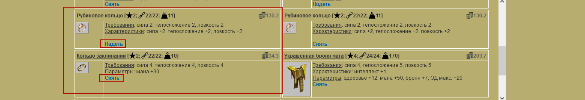
Это позволит нам надеть купленные ранее Темную корону, Наручи здоровья и Ритуальный пояс — после чего Рубиновые кольца можно снять и надень два кольца заклинаний. В итоге получим такого персонажа:
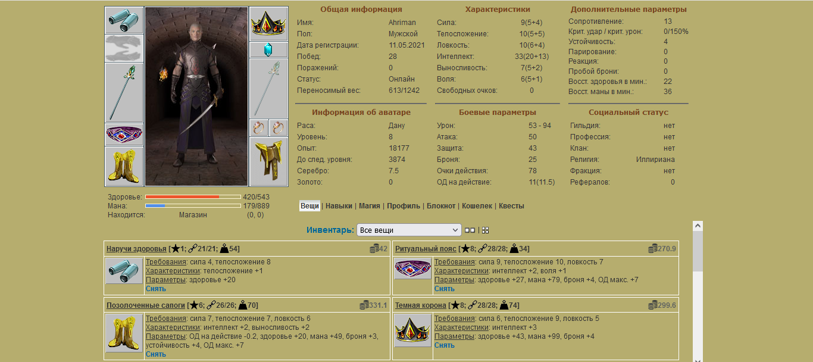
Как видим, у нас 889 маны, которых хватит аж на 11 зомби!